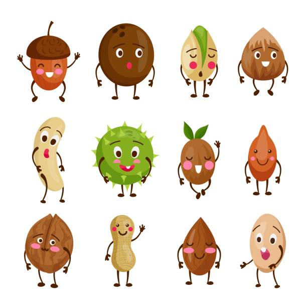

ABOUT US

FARM DRY FRUITS Foods is an integrated commodities conglomerate with an aim to become one of the leading dry fruits
and staples brand in the country.Proventus offers a variety of premium dry fruits, nuts, seeds, Berries and More
Our shop is a smart choice towards a healthy lifestyle.IN our shop we offer a wide range of products that include the highest quality almonds, cashews, walnuts, raisins and pistachios, sourced from the finest orchards across India and abroad.
Our shop is a smart choice towards a healthy lifestyle.IN our shop we offer a wide range of products that include the highest quality almonds, cashews, walnuts, raisins and pistachios, sourced from the finest orchards across India and abroad.
- Vocal for Local
- At Reasonable prices
- Fresh Dry Fruits
- Can cancel before 3 days